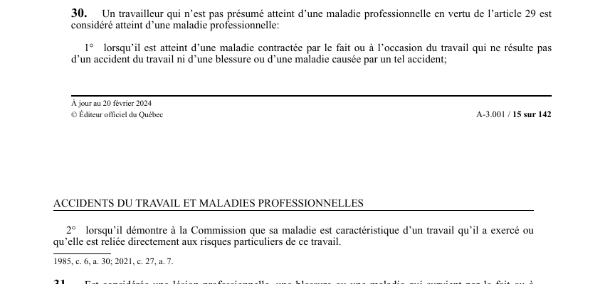

art-30-LATMP : maladie professionnelle hors présomption
Un article du wiki ⚖️ Recueil législatif
En bref
Le travailleur qui n'est pas présumé atteint d'une maladie professionnelle.
- Voie alternative à la présomption de l'art. 29 (maladie non inscrite à l'annexe I).
- Le travailleur doit démontrer le caractère professionnel : maladie caractéristique du travail.
- Fardeau de preuve à la charge du travailleur (contrairement à la présomption).
🌐 LegisQuébec · 📄 PDF officiel (page 15)
Texte officiel : capture du PDF

Toucher l'image pour l'agrandir🔗 Ouvrir a cette page : LATMP.pdf : page 15 · texte a jour au 20 février 2024
Jurisprudence
Décisions du recueil citant cet article :
Jurisprudence
- Aumond et Glencore Canada Corp - Fonderie horne (2017 QCTAT 1397)
Voir aussi
- art. 29 · présomption : les maladies inscrites à l'annexe I sont présumées d'origine professionnelle lorsque le travailleur a exercé le travail correspondant.
- art. 31 · champ d'application : est considérée une lésion professionnelle la blessure ou la maladie qui survient par le fait ou à l'occasion des soins reçus (ou de leur omission) pour une lésion professionnelle, ou d'une activité prescrite dans le cadre des traitements ou d'une mesure de réadaptation.
- 🔧 Modifié par : LMRSST art. 7 · remplace art.
- ↑ Loi : LATMP
Pages qui pointent ici (17)
- art-2-LATMP Hygiène industrielle
- art-2-LATMP Sécurité industrielle
- art-2-LATMP Toxicologie
- art-2-LATMP : définitions de la loi Recueil législatif
- art-28-LATMP : présomption de lésion professionnelle Recueil législatif
- art-29-LATMP : présomption de maladie professionnelle Recueil législatif
- art-31-LATMP : lésion survenant par le fait des soins ou de la réadaptation Recueil législatif
- art-7-LMRSST : modifie l'art. 29 et 30 LATMP Recueil législatif
- Aumond et Glencore Canada Corp. - Fonderie Horne Recueil législatif
- Index des décisions : table de travail Recueil législatif
- LATMP Recueil législatif
- LATMP : Chapitre II : Droits aux prestations et présomptions Recueil législatif
- Lésion professionnelle d'origine psychologique SST psychosociale
- Notions de la LATMP (lésion, accident, maladie) Droit du travail
- Plourde c. CSST (CLP 2009) - Lésion psychologique Recueil législatif
- Présomption de maladie professionnelle Recueil législatif
- Règlement maladies professionnelles Recueil législatif